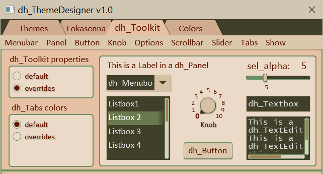
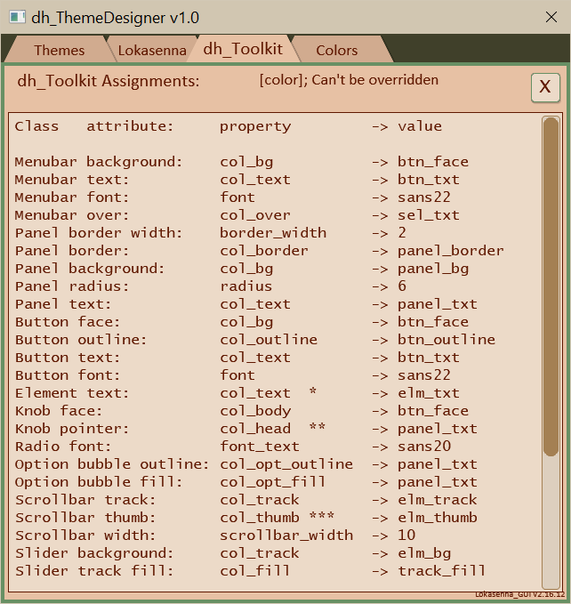
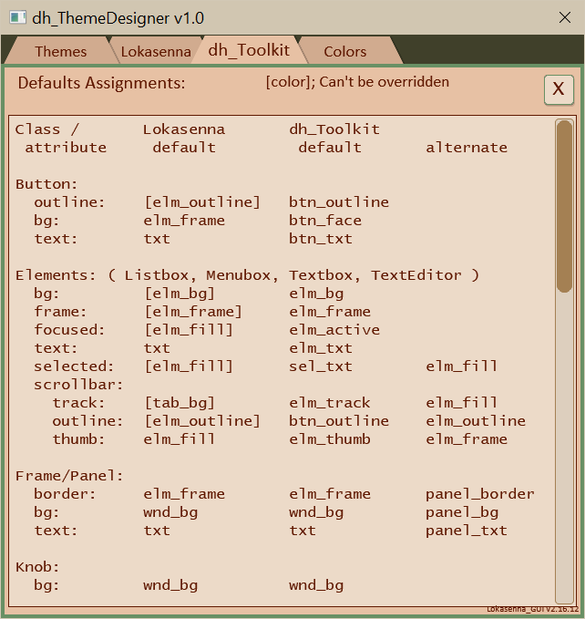

This tab displays the various dh_Toolkit defined elements (including the main top tab bar).

The menubar menus allow changing some of the property values
of the displayed elements. The first option shown in each menu item
is the default value. The remaining options are used to override the default.
Although this allows auditioning various colors, one should try to
stay with the defaults or recommended alternates.
(Except, of course, where prescribed such as panel colors.)
An example:
Button -> Face color shows four options.
The button face uses the default theme color "btn_face".
If a color other than the default works better than the default,
then the default "btn_face" theme color should be painted to that other color.
Not absolutely essential, but recommended in case possibly sharing a theme.
Of course, if designing a user theme for one's own then anything one decides is good.
Select "default" to display the default properties. Select "overrides" to display the overridden properties. Note: The background and text colors of labels, knob, and slider which are placed on the Lokasenna frame will use the default colors when in default mode, but will automatically be set to use the frame's background and text override colors. That is why there isn't a provision to set them independently. When in "default" mode the menubar selections will update the element properties in the background, but they won't be shown until "overrides" is selected.
Select "default" to display the default tab colors (main tab bar). Select "overrides" to display the overridden tab colors. This is kept separate because the main tab bar is, obviouly, not part of the tab content.
This is the only control in the Tabbed section that has any effect on the GUI colors. It is used to adjust the alpha value of the "sel_txt" (selected text) color. This color is optional, but can be used to enhance the highlight of selected text in dh_Listbox, dh_Textbox, and dh_TextEditor. This color gets added to the existing background color of the text to produce the highlight. Therefore it should be a darker color with an alpha value somewhere between 0.3 and 0.8. When the "Selected text" (GUI.colors["sel_txt"]) is selected then use the slider to select an alpha value. Click on the label "sel_alpha" to set the alpha. Note: The default for highlight is "elm_fill". If the default is used then the default alpha of 0.5 will be used.
"Property Assignments to panel" opens a panel which shows the current assigned dh_Toolkit property values. See image below.
"Property Assignments to console" opens the script console which shows the current assigned dh_Toolkit property values where they can be selected and copied if desired.
"Color Defaults to panel" opens a panel to display a list of both Lokasenna and dh_Toolkit elements default color values. See image below.

